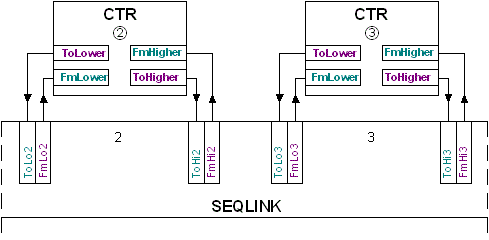

[SEQLINK] Sequence linker
SEQLINK is used to interconnect CTR function blocks.
Functioning
SEQLINK sequentially interconnects CTR function blocks.

The order of the CTR function blocks must match the order of the pins, Free spaces are allowed.

Several SEQLINKs can be interconnected in series.

Pins
Input | Description | Data type | Default value |
|---|---|---|---|
|
ToHi1…ToHi8 | To higher neighbor element 1…To higher neighbor element 8 | Structure | - |
ToHi1…ToHi8 | Control mode | Integer | 1: Inactive |
1: Inactive - Pin is not interconnected. | |||
ToHi1…ToHi8 | Sequence coordination CTR coordination signal. | Integer | 1: Nil |
1: Nil - Not connected (Default value). | |||
ToHi1…ToHi8 | Control token Controller enabled. | Integer | 1: Nil |
1: Nil - Not connected (Default value). | |||
ToHi1…ToHi8 | Is integrator Information on the integrating action of the CTR element. | Boolean | 0 |
0 - CTR element is not integrating. | |||
ToHi1…ToHi8 | Covered error Covered control error of the proportional part. | Real | 0.0 |
|
ToLo1…ToLo8 | To lower neighbor element 1…To lower neighbor element 8 | Structure | - |
ToLo1…ToLo8 | Control mode | Integer | 1: Inactive |
1: Inactive - Pin is not interconnected. | |||
ToLo1…ToLo8 | Sequence coordination CTR coordination signal. | Integer | 1: Nil |
1: Nil - Not connected (Default value). | |||
ToLo1…ToLo8 | Control token Controller enabled. | Integer | 1: Nil |
1: Nil - Not connected (Default value). | |||
ToLo1…ToLo8 | Is integrator Information on the integrating action of the CTR element. | Boolean | 0 |
0 - CTR element is not integrating. | |||
ToLo1…ToLo8 | Covered error Covered control error of the proportional part. | Real | 0.0 |
Output | Description | Data type | Default value |
|---|---|---|---|
|
FmHi1…FmHi8 | From higher neighbor element 1…From higher neighbor element 8 | Structure | - |
FmHi1…FmHi8 | Control mode | Integer | 1: Inactive |
1: Inactive - Pin is not interconnected. | |||
FmHi1…FmHi8 | Sequence coordination CTR coordination signal. | Integer | 1: Nil |
1: Nil - Not connected (Default value). | |||
FmHi1…FmHi8 | Control token Controller enabled. | Integer | 1: Nil |
1: Nil - Not connected (Default value). | |||
FmHi1…FmHi8 | Is integrator Information on the integrating action of the CTR element. | Boolean | 0 |
0 - CTR element is not integrating. | |||
FmHi1…FmHi8 | Covered error Covered control error of the proportional part. | Real | 0.0 |
|
FmLo1…FmLo8 | From lower neighbor element 1…From lower neighbor element 8 | Structure | - |
FmLo1…FmLo8 | Control mode | Integer | 1: Inactive |
1: Inactive - Pin is not interconnected. | |||
FmLo1…FmLo8 | Sequence coordination CTR coordination signal. | Integer | 1: Nil |
1: Nil - Not connected (Default value). | |||
FmLo1…FmLo8 | Control token Controller enabled. | Integer | 1: Nil |
1: Nil - Not connected (Default value). | |||
FmLo1…FmLo8 | Is integrator Information on the integrating action of the CTR element. | Boolean | 0 |
0 - CTR element is not integrating. | |||
FmLo1…FmLo8 | Covered error Covered control error of the proportional part. | Real | 0.0 |